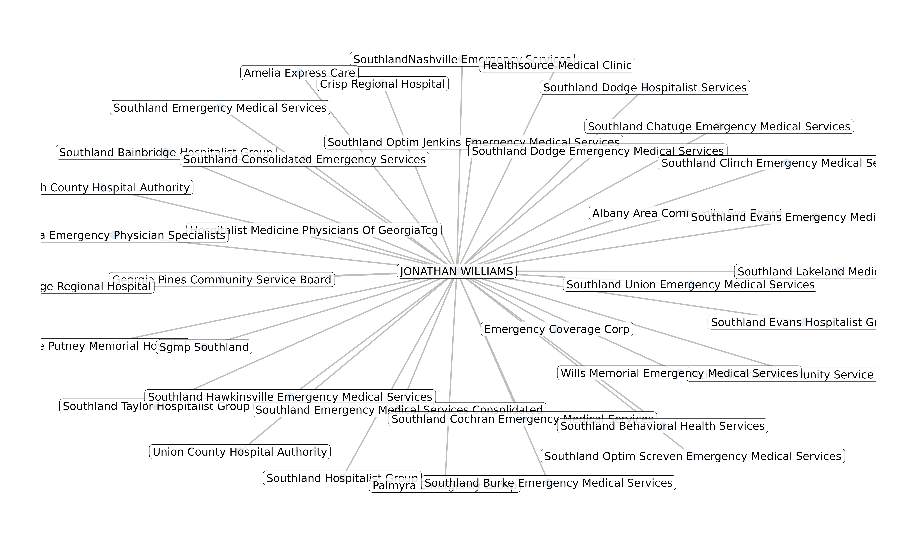

library(provider)
library(dplyr)
library(purrr)
library(stringr)
library(igraph)
library(tidygraph)
library(ggraph)Example: Edge Table
edge_table <- tribble(
~from, ~to, ~label,
"Individual", "Organization", "Reassigns Benefits To",
"Organization", "Individual", "Accepts Reassignment From")
edge_table#> # A tibble: 2 × 3
#> from to label
#> <chr> <chr> <chr>
#> 1 Individual Organization Reassigns Benefits To
#> 2 Organization Individual Accepts Reassignment FromExample: Node Table
node_table <- tribble(
~name, ~x, ~y,
"Individual", 1, 0,
"Organization", 2, 0)
node_table#> # A tibble: 2 × 3
#> name x y
#> <chr> <dbl> <dbl>
#> 1 Individual 1 0
#> 2 Organization 2 0
example <- graph_from_data_frame(
d = edge_table,
vertices = node_table,
directed = TRUE)
example#> IGRAPH 074aa68 DN-- 2 2 --
#> + attr: name (v/c), x (v/n), y (v/n), label (e/c)
#> + edges from 074aa68 (vertex names):
#> [1] Individual ->Organization Organization->Individual
ggraph(example, layout = "manual", x = x, y = y) +
geom_node_text(aes(label = name), size = 5) +
geom_edge_arc(
aes(label = label),
angle_calc = 'none',
label_dodge = unit(2, 'lines'),
arrow = arrow(length = unit(0.5, 'lines')),
start_cap = circle(4, 'lines'),
end_cap = circle(4, 'lines'),
strength = 1) +
theme_void() +
coord_fixed()Provider Networks
williams <- reassignments("1346391299") |>
mutate(
provider = str_glue("{first} {last}"),
organization = str_squish(
str_remove_all(
str_to_title(organization),
regex("Llc|Inc| Pc|-|,+|\\.")))) |>
select(provider,
organization,
reassignments) |>
arrange(desc(reassignments))
williams#> # A tibble: 38 × 3
#> provider organization reassignments
#> <glue> <chr> <int>
#> 1 JONATHAN WILLIAMS Emergency Coverage Corp 272
#> 2 JONATHAN WILLIAMS Phoebe Putney Memorial Hospital 187
#> 3 JONATHAN WILLIAMS Southland Emergency Medical Services Consoli… 146
#> 4 JONATHAN WILLIAMS Union County Hospital Authority 113
#> 5 JONATHAN WILLIAMS Southland Bainbridge Hospitalist Group 112
#> 6 JONATHAN WILLIAMS Sgmp Southland 105
#> 7 JONATHAN WILLIAMS Clinch County Hospital Authority 103
#> 8 JONATHAN WILLIAMS Crisp Regional Hospital 100
#> 9 JONATHAN WILLIAMS Southland Consolidated Emergency Services 94
#> 10 JONATHAN WILLIAMS Southland Emergency Medical Services 84
#> # ℹ 28 more rows
{tidygraph}
will_tdgrph <- tidygraph::as_tbl_graph(williams, directed = FALSE)
summary(will_tdgrph)#> IGRAPH 2e3bd15 UN-- 38 38 --
#> + attr: name (v/c), reassignments (e/n)
will_tdgrph#> # A tbl_graph: 38 nodes and 38 edges
#> #
#> # An undirected multigraph with 1 component
#> #
#> # Node Data: 38 × 1 (active)
#> name
#> <chr>
#> 1 JONATHAN WILLIAMS
#> 2 Emergency Coverage Corp
#> 3 Phoebe Putney Memorial Hospital
#> 4 Southland Emergency Medical Services Consolidated
#> 5 Union County Hospital Authority
#> 6 Southland Bainbridge Hospitalist Group
#> 7 Sgmp Southland
#> 8 Clinch County Hospital Authority
#> 9 Crisp Regional Hospital
#> 10 Southland Consolidated Emergency Services
#> # ℹ 28 more rows
#> #
#> # Edge Data: 38 × 3
#> from to reassignments
#> <int> <int> <int>
#> 1 1 2 272
#> 2 1 3 187
#> 3 1 4 146
#> # ℹ 35 more rows
ggraph(will_tdgrph, "stress") +
geom_edge_link(
end_cap = circle(0.5, 'mm'),
edge.width = 0.5, color = "grey") +
geom_node_point(
show.legend = FALSE,
alpha = 1,
color = 'steelblue',
size = 2.5) +
geom_node_label(
aes(label = name),
repel = FALSE,
size = 3,
alpha = 0.85,
label.r = unit(0.25, "lines"),
label.size = 0.1,
check_overlap = TRUE) +
theme_graph(fg_text_colour = 'white')